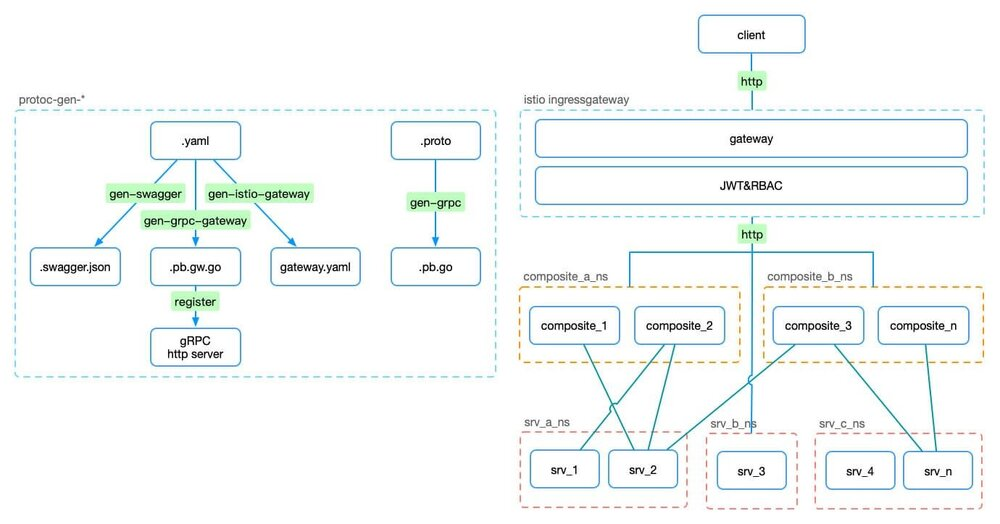
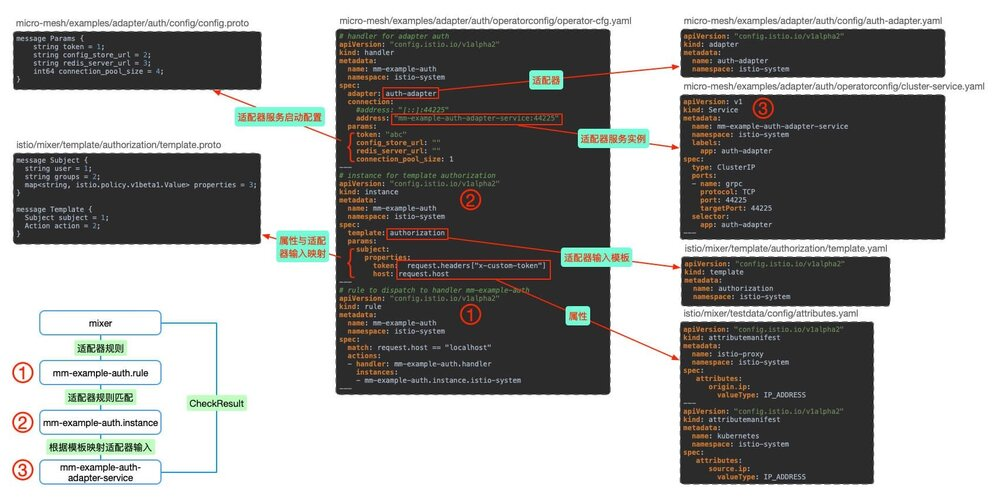

快速开始：https://micro-mesh/examples/adapter/auth源码传送门。
研究Istio下构建简洁的微服务架构，对Istio的研究也更深入，自定义Mixer Adapter必不可少，以下结合使用场景做一个自定义适配器的实践分享。
背景

结合https://github.com/hb-go/micro-mesh的实践场景，需要在ingressgateway与API service间加入认证&鉴权(JWT&RBAC)，自然考虑Istio提供的安全方案，但使用JWT做认证鉴权在后端是无状态的，这样在使用场景上有一定限制，如:
- 密码修改、终端连接限制等场景下无法踢除
- 访问控制策略无法实时生效
默认方案只是在一些场景下不合适，根据具体需求考虑。
基于这样的场景可以自定义Adapter来实现，目标:
- Token-JWT
- 服务端验证token有效性
- 应对密码修改、终端数量限制等场景
- ACL-Casbin
- 服务端获取用户角色，做API访问控制
- 用户角色及接口授权策略实时生效
以下示例对token验证、访问控制不做具体设计，重点介绍如何自定义一个auth-adapter
自定义Adapter介绍
配置关系及执行流程如图：

- 属性：使用
istio的attributes，istio/mixer/testdata/config/attributes.yaml - 属性与适配器输入映射模板：使用
istio的authorization模板，istio/mixer/template/authorization/template.yaml，通过template.proto查看协议内容 - 适配器，
micro-mesh/examples/adapter/auth/config/auth-adapter.yamlgo generate ./...自动生成
- 适配器服务启动配置，
micro-mesh/examples/adapter/auth/config/config.proto - 适配器服务实例，
micro-mesh/examples/adapter/auth/operatorconfig/cluster-service.yaml - 适配器配置，
micro-mesh/examples/adapter/auth/operatorconfig/operator-cfg.yaml
目录结构
bin 执行文件
cmd
└ main.go 适配器入口
config 配置协议
├ adapter.auth.config.pb.html #go generate ./... 自动生成
├ auth-adapter.yaml 适配器描述文件 #go generate ./... 自动生成
├ config.pb.go #go generate ./... 自动生成
├ config.proto 适配器服务启动配置
└ config.proto_descriptor #go generate ./... 自动生成
operatorconfig k8s配置
├ attributes.yaml 属性 #copy istio/mixer/testdata/config/attributes.yaml
├ cluster-service.yaml 适配器服务实例
├ operator-cfg.yaml 适配器配置
└ template.yaml 属性与适配器输入模板 #copy istio/mixer/template/authorization/template.yaml
testdata 测试配置
├ attributes.yaml 属性 #copy istio/mixer/testdata/config/attributes.yaml
├ auth-adapter.yaml 适配器描述文件 #copy config/auth-adapter.yaml
├ operator-cfg.yaml 适配器配置
└ template.yaml 属性与适配器输入模板 #copy istio/mixer/template/authorization/template.yaml
auth.go 适配器服务实现
Dockerfile Docker镜像
有3处与适配器实现相关：
- 适配器服务启动配置
config/config.proto - 适配器服务实现
auth.go - 适配器入口
cmd/main.go
接下来使用micro-mesh/examples/adapter/auth源码按步骤操作，实现本地及
K8S环境的测试部署。
步骤
开发环境
- OSX
- Go 1.11.1
- protoc libprotoc 3.6.1
- Istio 1.0.6
1.Istio源码
mkdir -p $GOPATH/src/istio.io/
cd $GOPATH/src/istio.io/
git clone https://github.com/istio/istio.git
2.micro-mesh源码
git clone https://github.com/hb-go/micro-mesh.git
3.Mixer开发工具
# build mixer server & client
cd istio
make mixs
make mixc
在$GOPATH/out/darwin_amd64/release/生成mixs、mixc。
4.构建Auth adapter项目
# copy auth adapter example
cp {micro-mesh path}/examples/adapter/auth mixer/adapter/auth
cd mixer/adapter/auth
Optional
可以删除config目录除config.proto外的其他文件，看执行go generate后的结果
go generate ./...
go build ./...
go generate根据config/config.proto以及auth.go的注释自动生成config目录下的其他文件:
- adapter.auth.config.pb.html
- auth-adapter.yaml
- config.pb.go
- config.proto_descriptor
根据
auth.go的以下注释，mixer_codegen.sh使用authorization模板生成name为auth-adapter的适配器。
// nolint:lll
// Generates the auth adapter's resource yaml. It contains the adapter's configuration, name, supported template
// names (metric in this case), and whether it is session or no-session based.
//go:generate $GOPATH/src/istio.io/istio/bin/mixer_codegen.sh -a mixer/adapter/auth/config/config.proto -x "-s=false -n auth-adapter -t authorization"
5.本地测试
本地测试使用testdata下的配置，其中operator-cfg.yaml有几处与正式部署不同：
handler的address使用本地服务"[::]:44225"- 为了方便测试
instance的params参数以及rule的math条件做了简化
# 启动适配器服务
go run cmd/main.go 44225
# 使用testdata下配置启动mixer server
$GOPATH/out/darwin_amd64/release/mixs server \
--configStoreURL=fs://$GOPATH/src/istio.io/istio/mixer/adapter/auth/testdata \
--log_output_level=attributes:debug
# 测试Adapter是否生效
$GOPATH/out/darwin_amd64/release/mixc check -s request.host="localhost" --stringmap_attributes "request.headers=x-custom-token:efg"
# Check RPC completed successfully. Check status was PERMISSION_DENIED (mm-example-auth.handler.istio-system:Unauthorized...)
$GOPATH/out/darwin_amd64/release/mixc check -s request.host="localhost" --stringmap_attributes "request.headers=x-custom-token:abc"
# Check RPC completed successfully. Check status was OK
NOTE:出现预期结果不一致可能是由于mixer cache导致
Valid use count: 10000, valid duration: 9.726875254s，请参考Istio Mixer Cache系列文章了解。
6.打包镜像
# build执行文件
CGO_ENABLED=0 GOOS=linux \
go build -a -installsuffix cgo -v -o bin/auth ./cmd/
# docker镜像
docker build -t hbchen/micro-mesh-example-adapter-auth:v0.0.1 .
docker push hbchen/micro-mesh-example-adapter-auth:v0.0.1
7.Istio环境部署
部署环境
- GKE 1.11.7-gke.4
- Istio 1.0.0
# 属性、模板
# attributes.yaml -> istio/mixer/testdata/config/attributes.yaml
# template.yaml -> istio/mixer/template/authorization/template.yaml
kubectl apply -f examples/adapter/auth/testdata/attributes.yaml -f examples/adapter/auth/testdata/template.yaml
# 适配器
kubectl apply -f examples/adapter/auth/config/auth-adapter.yaml
这里是以micro-mesh示例为基础的配置，如果使用
bookinfo或者自己的服务需要做相应的修改
operator-cfg.yaml与本地测试配置不同：
handler的address使用集群服务"mm-example-auth-adapter-service:44225"instance的params根据authorization模板及auth-adapter服务的需求配置rule的match条件使用destination.service == "mm-example-api.default.svc.cluster.local"，仅对mm-example-api服务生效
# 适配器服务实例部署
kubectl apply -f examples/adapter/auth/operatorconfig/cluser-service.yaml
# 适配器配置
kubectl apply -f examples/adapter/auth/operatorconfig/operator-cfg.yaml
8.Istio环境部署测试
如果没有开Gateway的JWT验证可以忽略
Authorization，其实做了自定义Auth后是多余的😂
TOKEN=$(curl https://raw.githubusercontent.com/istio/istio/release-1.1/security/tools/jwt/samples/demo.jwt -s)
curl -H "Authorization: Bearer $TOKEN" -H "x-custom-token: efg" -X GET http://35.193.180.18/v1/example/call/Hobo
curl -H "Authorization: Bearer $TOKEN" -H "x-custom-token: abc" -X GET http://35.193.180.18/v1/example/call/Hobo